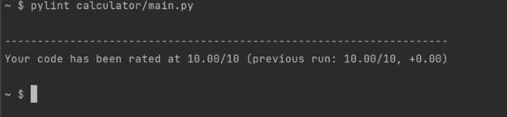

What is Pylint - Pylint is a tool to check Python’s code errors enforcing some code standards. It looks for certain types of errors and recommends suggestions about how particular chunks of code can be refactored. The Python community has formalized some recommended programming styles to help everyone write code in a common, agreed-upon style that makes the most sense for shared code. This style is captured in PEP 8, “the style guide for Python code”. Pylint can be a quick and easy way of seeing if your code has captured the pattern of PEP 8 standards and is user-friendly It displays the number of messages as it analyzes the code and it can also be used for displaying some statistics about the number of warnings and errors found in different files. It gives overall marks to the code based on the number and severity of the warnings and errors. We should have .pylintrc which is the config file for pylint. We will make a small tutorial for one part of calculator code to check if that passes the pylint standards or not.
So this is our code ‘main.py’ for the calculator program. Let’s see what we get when we run through
pylint. Pylint also gives marks to your code.
Command - ‘pylint filename’. We have a main.py file in folder named calculator.
We see we got three error messages. First one says it’s on line 2 and the other two are on line 21. Two of them are about missing class and function docstring. So there should be a little comment underneath explaining the class ‘calculator’ and method ‘divide_number’ does. Middle one is about that method name does not follow snake_case naming style. There should be no capital letters in the method name. Let’s correct them and run it.
Let’s see what we get after running it
Hooray!! No errors and we got full marks.